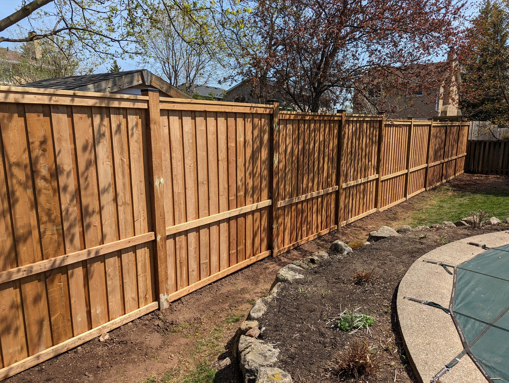
Fencing
Fence Replacement
Durable, professionally installed fences that improve privacy, security and curb appeal — built to last.
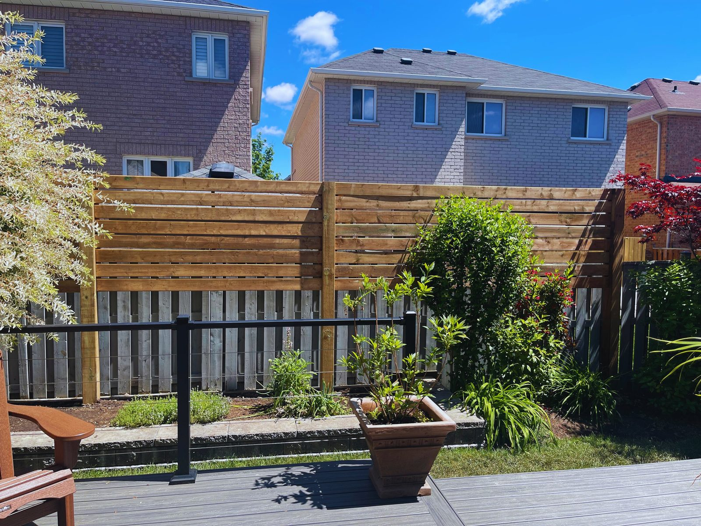
Milton & Halton Region · Fences & Decks
Quality fences and custom decks from a fully insured Milton crew that treats your yard like their own.
What we build
From a full fence replacement to a custom deck or a careful repair, Citadel handles the job start to finish across Halton and neighbouring cities.

Durable, professionally installed fences that improve privacy, security and curb appeal — built to last.
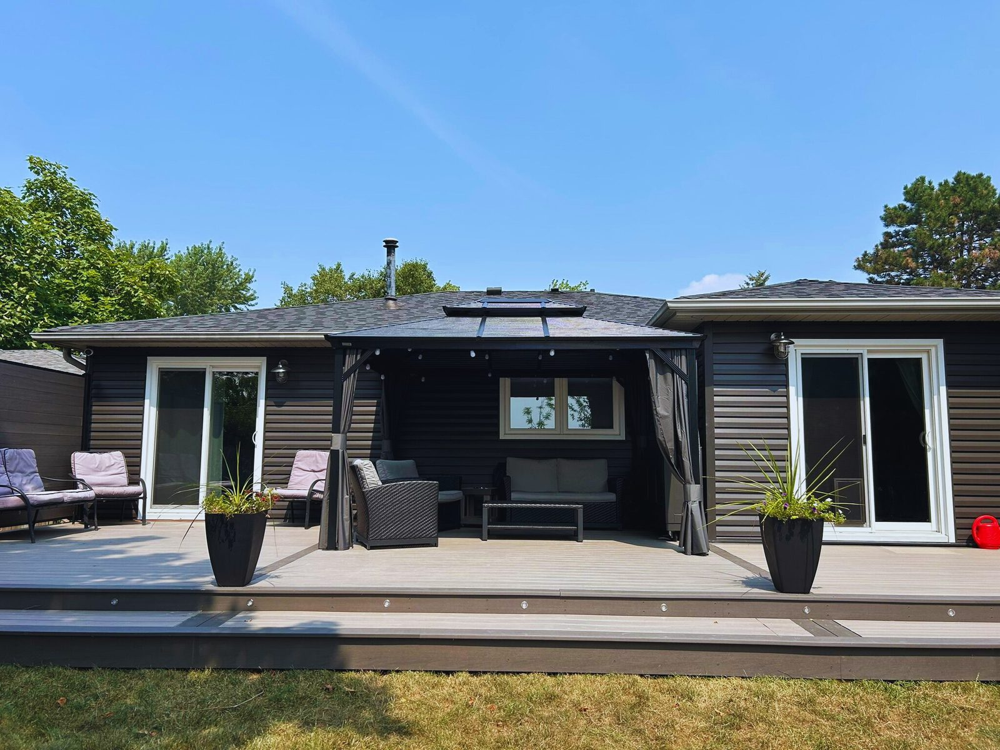
Thoughtfully designed, professionally built custom decks that elevate your outdoor living space.
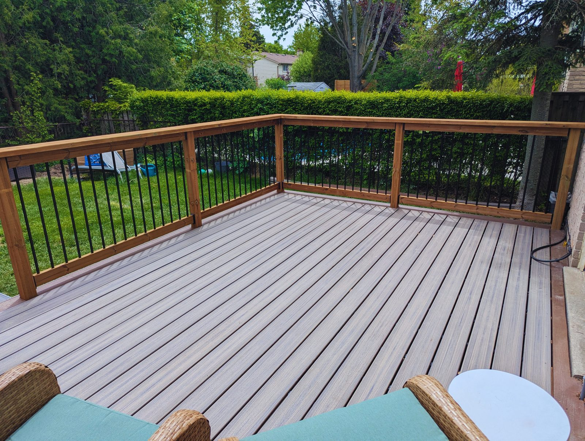
Restore the beauty and safety of your fence or deck with professional repairs and restorations.
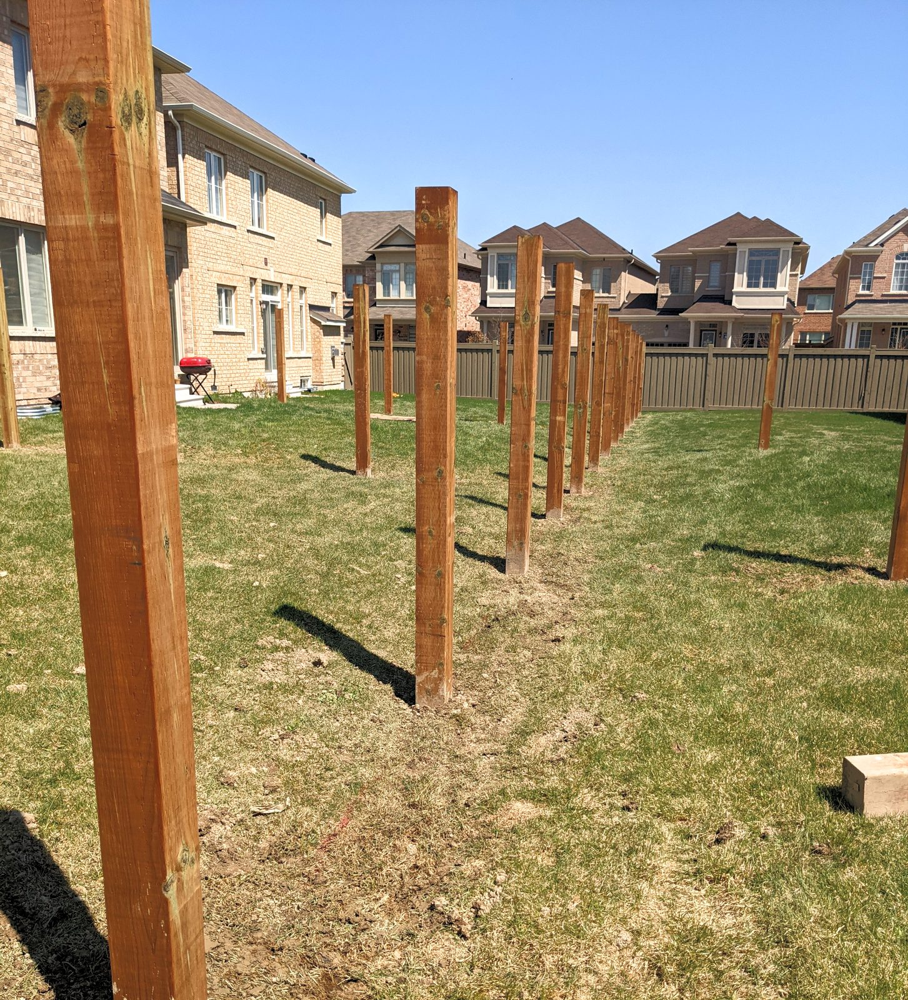
Precise, efficient post-hole digging for fences, decks and structures — a strong, stable foundation every time.
Gallery
Fences and decks built for homeowners across Milton and Halton.
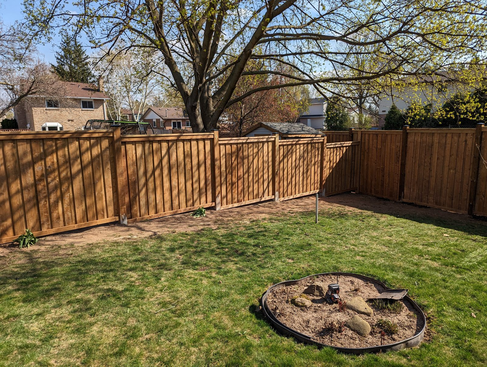
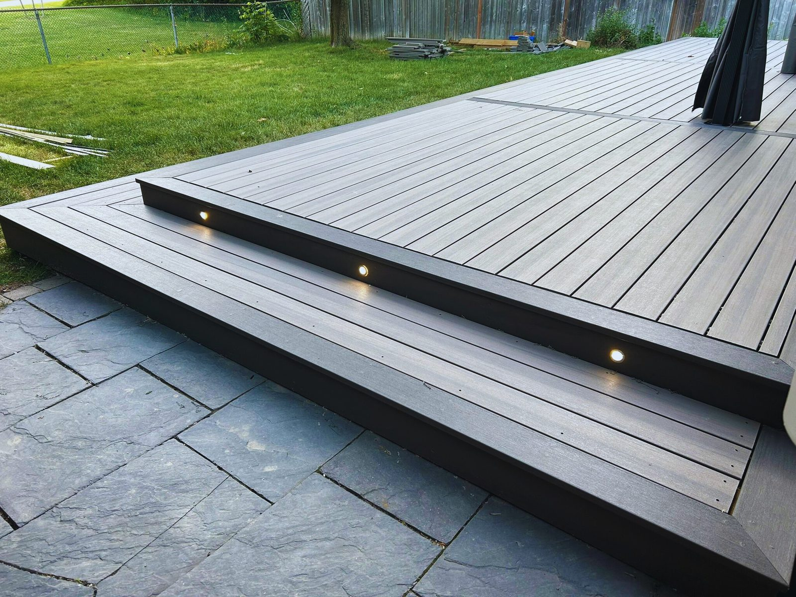
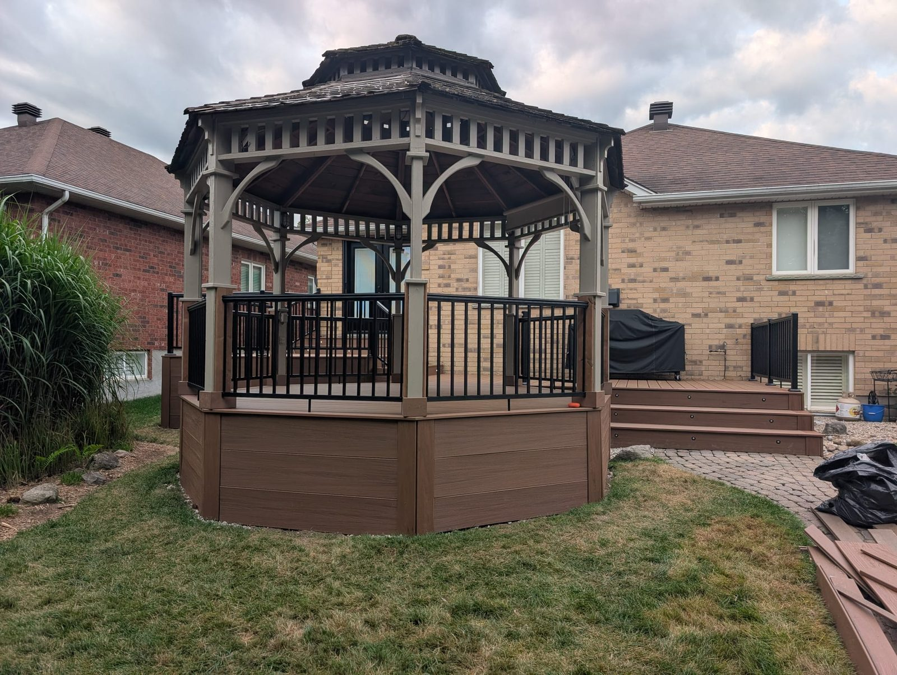
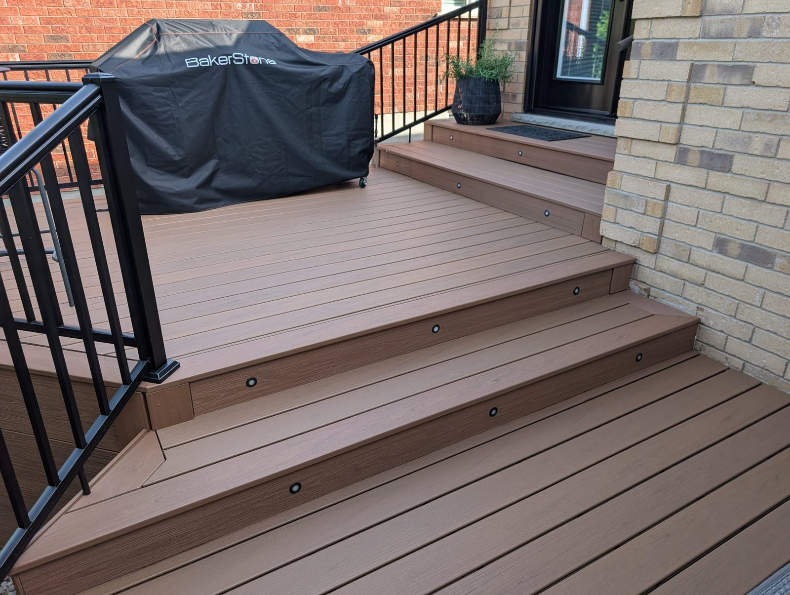
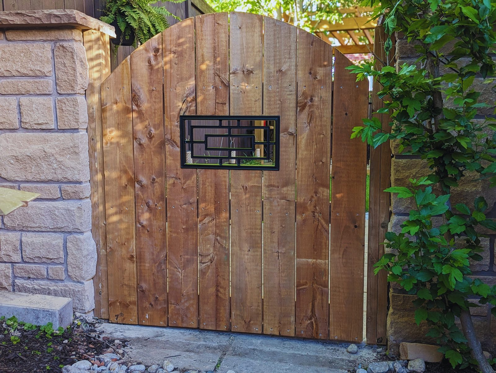
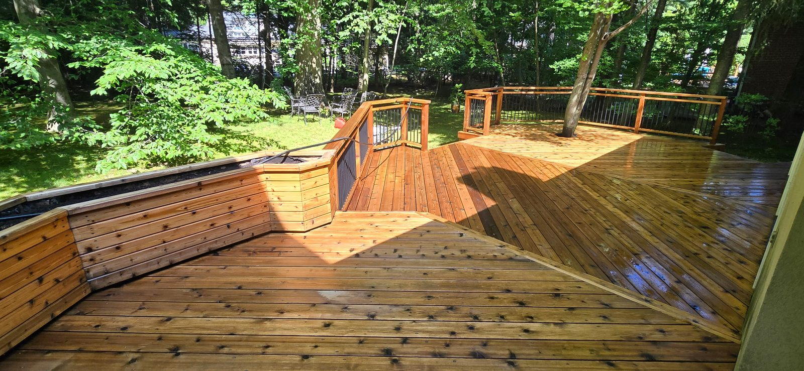
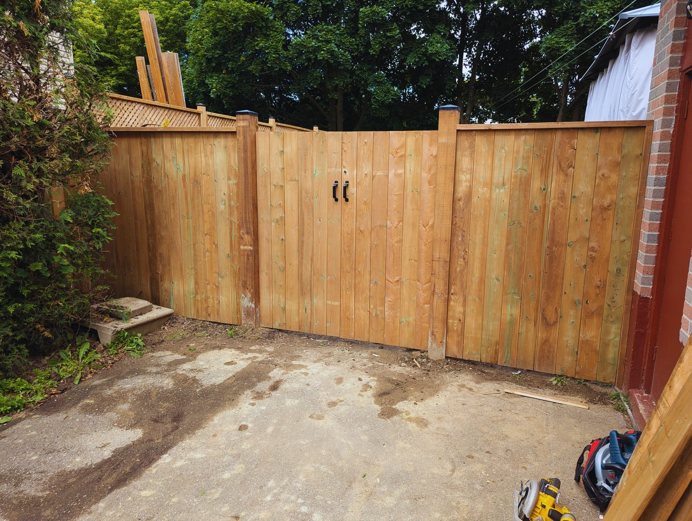
About Citadel
It started with friends and family asking for help. Mike is a full-time teacher who built decks and fences on the side. Over more than 15 years the demand kept growing — and the references kept coming — until he hired a team to keep up.
Now fully incorporated and fully insured, Citadel Fence and Deck takes on your project with confidence. Experience, craftsmanship and a commitment to quality are what set the crew apart. Your positive reference is their biggest compliment.
Client testimonials
Quotes from Citadel’s own testimonials page — plus a 5.0 Google rating from about 40 reviews.
“We were incredibly impressed with the work that Mike and his team delivered on our recent backyard fence project. Mike was super responsive… customer satisfaction was top of mind.”
“Mike and his crew were professional from day 1. Laid out a schedule and stuck to it despite the lousy May weather. Quality and after-install service was above what I expected.”
“We were extremely happy with the work provided by Mike and his team. He understood our vision and executed it to perfection. Great job!”
FAQ
Straight answers from Citadel’s own FAQ, so you know what to expect before the first visit.
Fill out the form with basic project info and Citadel aims to get back within 48 hours. After a phone discussion, a team member visits for an estimate. A 10% non-refundable deposit reserves the job; dig permission is arranged; 14 days before start they confirm details and collect another 50% (60% total). The remaining 40% is due on completion and a quality walk-through. Driveway or curbside space may be needed for disposal bins.
If a shared fence is falling down, neighbours usually want it replaced too. Keep them informed. Mike and his team can help with the conversation when needed.
You generally have the right to replace your fence. Provide three quotes; they should pay the average of the three. You can still choose your contractor and cover any difference. Pool, child or dog safety and local by-laws also matter — Mike can walk you through the details.
Fencing: usually no, but dig locates are required (included in Citadel’s service). Decking: maybe — low, small decks often don’t need a permit; larger or raised decks often do. Permits are the homeowner’s responsibility; Mike can help answer questions.
Know someone who needs a fence or deck?
Citadel grows on references. If a neighbour or friend needs work done right, we’d love an introduction.
Contact
Tell us about your fence or deck project. Mike and the team will follow up to set up a visit.
Milton, Ontario
Hours from their Google listing — confirm when you call.